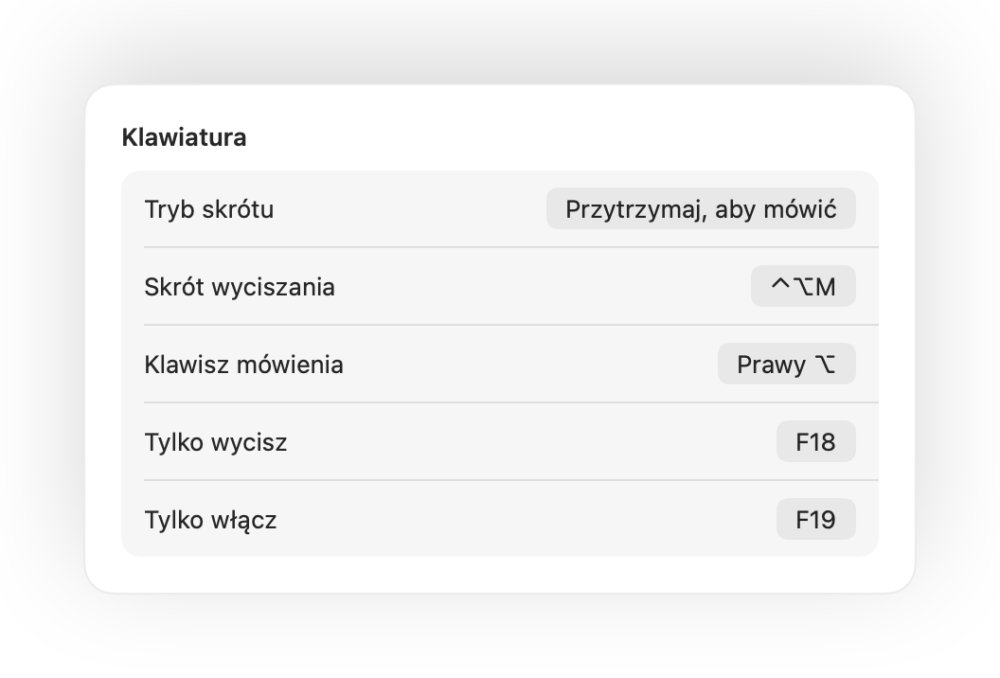

Push to talk na Macu w każdej aplikacji
Funkcja push to talk utrzymuje mikrofon wyciszony, dopóki nie przytrzymasz klawisza. To najwygodniejszy sposób na ciszę podczas dużych spotkań lub w hałaśliwych miejscach, ale ma go tylko kilka aplikacji i każda wymaga innego klawisza.
Muffle dodaje tryb push to talk do każdej aplikacji na Macu. Wybierz opcję „Przytrzymaj, aby mówić” w Ustawieniach, przytrzymaj skrót, aby zabrać głos, i puść, aby ponownie wyciszyć mikrofon.
Jak korzystać z push to talk
- 1
Zainstaluj Muffle.
- 2
W oknie Ustawienia Muffle ustaw opcję „Tryb skrótu” na „Przytrzymaj, aby mówić”.
- 3
Przytrzymaj Control-Option-M, kiedy mówisz.
- 4
Puść klawisze. Twój mikrofon znów jest wyciszony.

- Wolisz pojedynczy klawisz? Skonfiguruj klawisz mówienia w Ustawieniach: prawy ⌥, fn lub dodatkowy przycisk myszy.
- Wybierz wygodny skrót klawiszowy w Ustawieniach Muffle, na przykład jeden z klawiszy F.
Pytania
Czy funkcja push to talk działa w Google Meet?
Tak. Muffle wycisza sam mikrofon, więc push to talk działa w Meet, Zoom, Teams, Discordzie i każdej innej aplikacji.
Czy jest dostępna funkcja push to mute?
Tak. Wybierz opcję „Przytrzymaj, aby wyciszyć” i przytrzymaj skrót, aby wyciszyć mikrofon na chwilę, jak przyciskiem kaszlu.